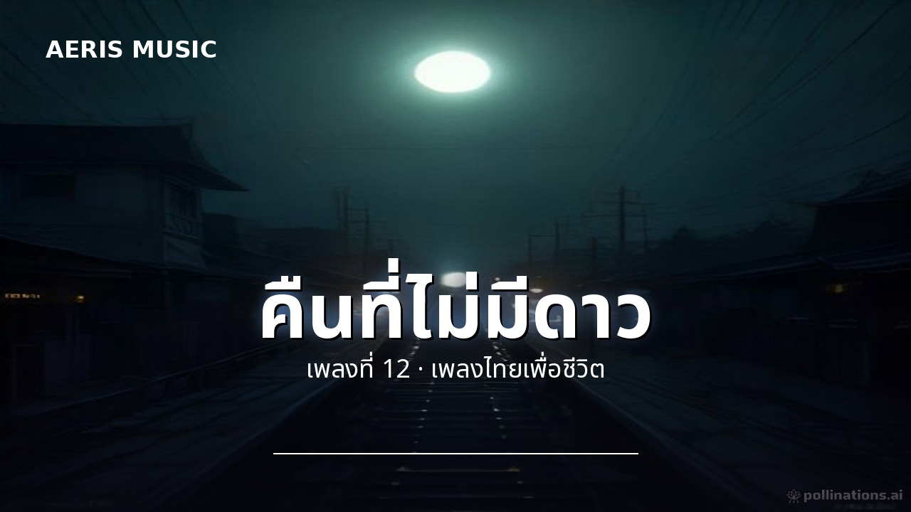
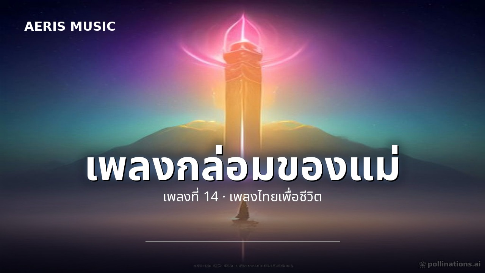
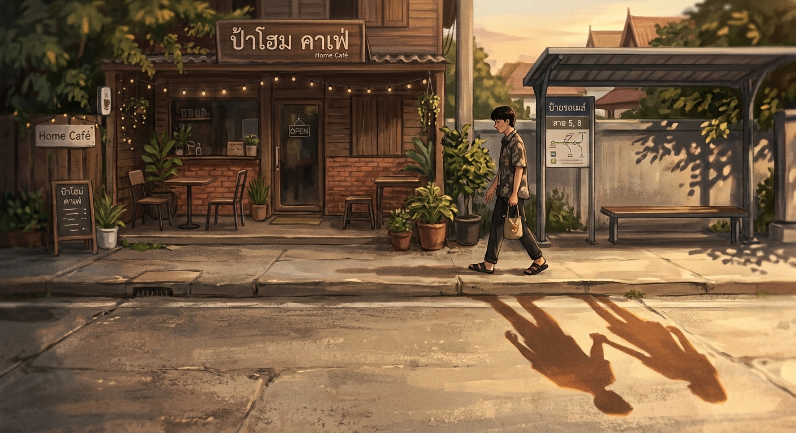
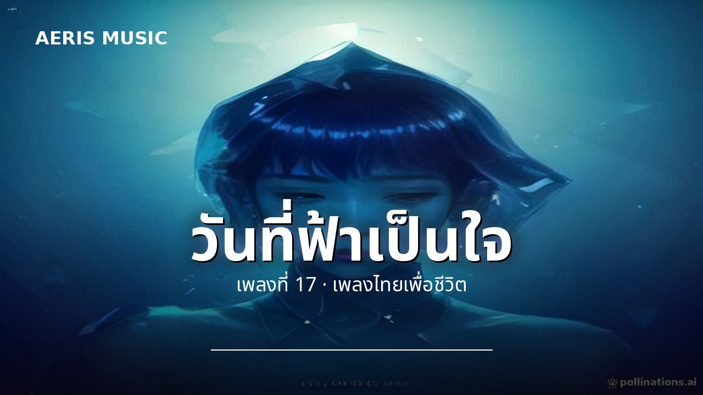
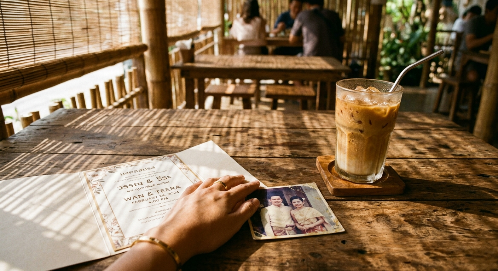
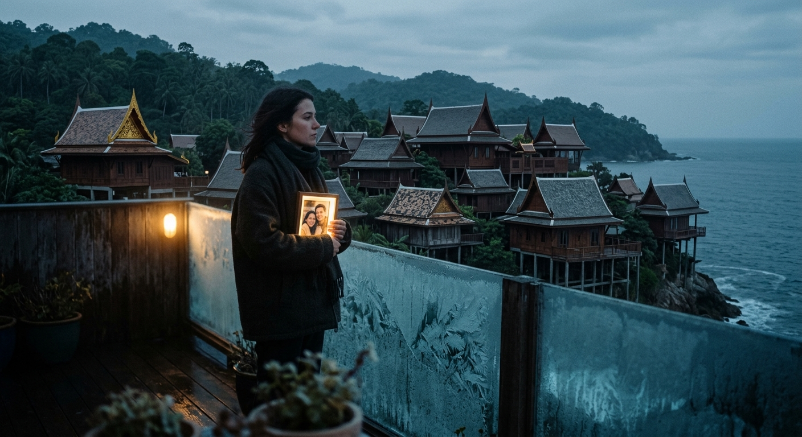

| # | ชื่อเพลง | เวลา | ดาวน์โหลด | |
|---|---|---|---|---|
| 10 | ดอกไม้ริมทางเพลงที่ 10 · เพลงไทยเพื่อชีวิต | 3:37 | เพลง · คาราโอเกะ | |
| 11 | สัญญาจากใจเพลงที่ 11 · เพลงไทยเพื่อชีวิต | 3:30 | เพลง · คาราโอเกะ | |
 | 12 | คืนที่ไม่มีดาวเพลงที่ 12 · เพลงไทยเพื่อชีวิต | 3:59 | เพลง · คาราโอเกะ |
| 13 | รักที่จากไปเพลงที่ 13 · เพลงไทยเพื่อชีวิต | 3:55 | เพลง · คาราโอเกะ | |
 | 14 | เพลงกล่อมของแม่เพลงที่ 14 · เพลงไทยเพื่อชีวิต | 3:59 | เพลง · คาราโอเกะ |
 | 15 | ถนนสายเก่าเพลงที่ 15 · เพลงไทยเพื่อชีวิต | 3:59 | เพลง · คาราโอเกะ |
| 16 | ความฝันที่ยังไม่ตายเพลงที่ 16 · เพลงไทยเพื่อชีวิต | 3:59 | เพลง · คาราโอเกะ | |
 | 17 | วันที่ฟ้าเป็นใจเพลงที่ 17 · เพลงไทยเพื่อชีวิต | 3:59 | เพลง · คาราโอเกะ |
 | 18 | คนที่ฉันเคยรักเพลงที่ 18 · เพลงไทยเพื่อชีวิต | 3:59 | เพลง · คาราโอเกะ |
 | 19 | ลมหนาวกับความคิดถึงเพลงที่ 19 · เพลงไทยเพื่อชีวิต | 3:46 | เพลง · คาราโอเกะ |
| 20 | ขอบคุณที่ยังหายใจเพลงที่ 20 · เพลงไทยเพื่อชีวิต | 3:50 | เพลง · คาราโอเกะ |